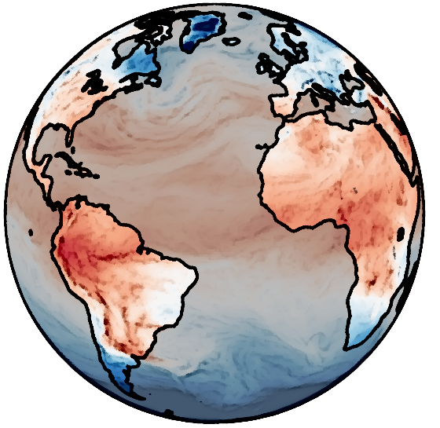
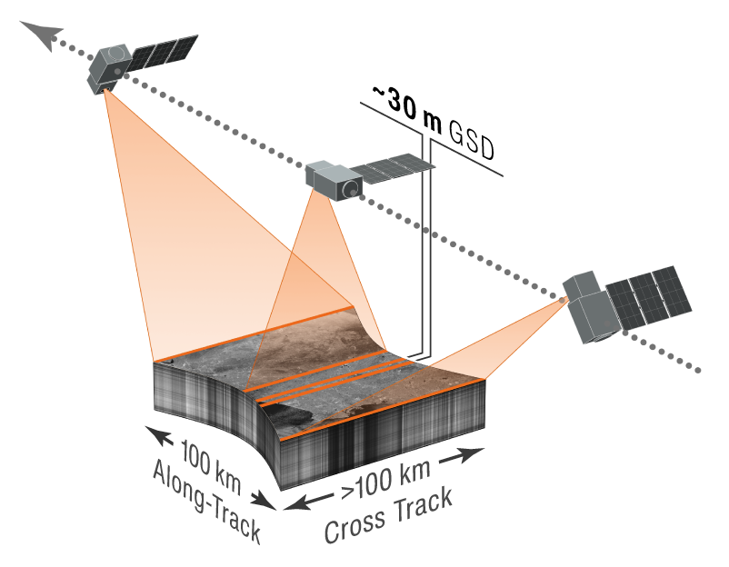
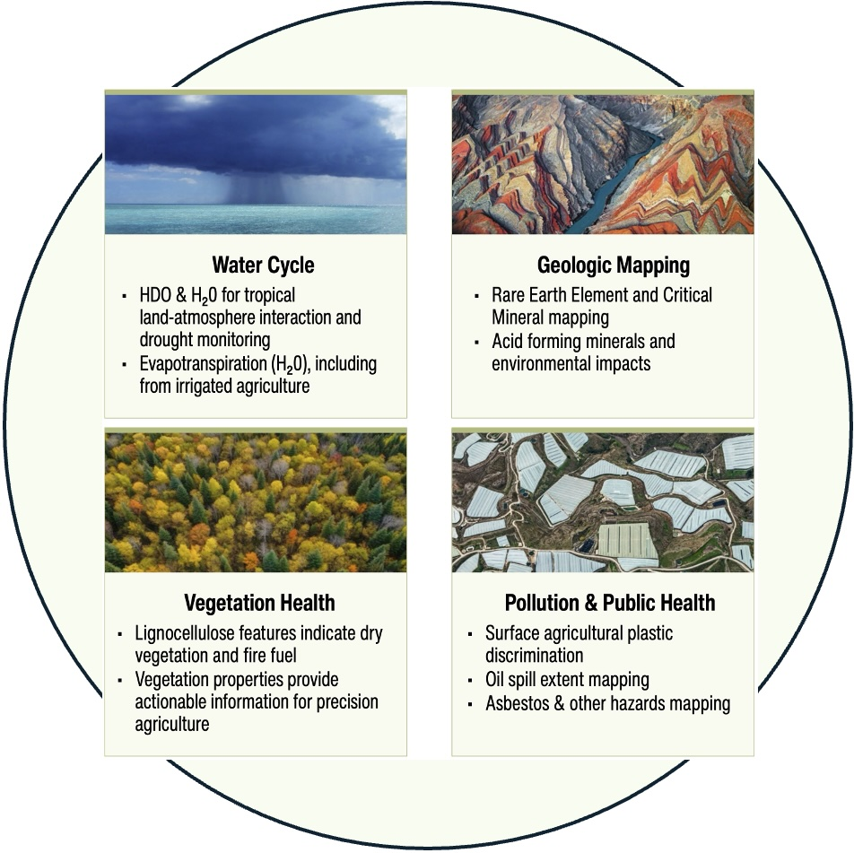

Closing tropical data gaps to resolve global carbon-budget uncertainties
A Phase A concept study selected by NASA in the Earth System Explorer mission proposal call.
Carbon-I will:
Address multiple Decadal Survey objectives by quantifying carbon fluxes, detecting hotspots globally, and closing critical data gaps
Feature a high heritage shortwave infrared imaging spectrometer (2.04-2.37 µm)
Be the first instrument to combine land imaging spatial detail with high resolution atmospheric spectroscopy
Feature a ~100 km swath to deliver monthly global land coverage at ≤400 m with ~10 times finer sampling for high-priority areas

Science Objectives:
Identify, characterize, and quantify hotspots of CH4, CO2, and CO emissions globally
Quantify global monthly CH4, CO2, and CO fluxes at ≤ 100 km resolution
Attribute and quantify the processes driving natural and anthropogenic fluxes

Mission Overview:
Carbon-I is the first to pair land-imaging spatial detail with high-resolution atmospheric spectra, providing unique insights into the atmosphere and land surface.
Measures CH4, CO2, CO plus tracers via SWIR absorption spectroscopy.
Maps land and coastal oceans monthly at < 400 m, peering between clouds.
Zooms to 100 × 100 km targets at < 50 m for regions with highest uncertainties.
More than just gases: Surface-mapping unlocks novel mineral and vegetation data, delivering new insights for the public, private, and non-profit sectors.

Applications and Science Enhancements:
Enhancing public safety and air quality, advancing international oil and gas transparency, supporting waste management and agriculture
Tracking natural carbon fluxes, providing critical insights into global industrial activity and economic stability
Constraining the water cycle and improving drought monitoring using water isotopologues
Enabling novel identification of critical minerals, vegetation characterization, and fire fuel assessment
